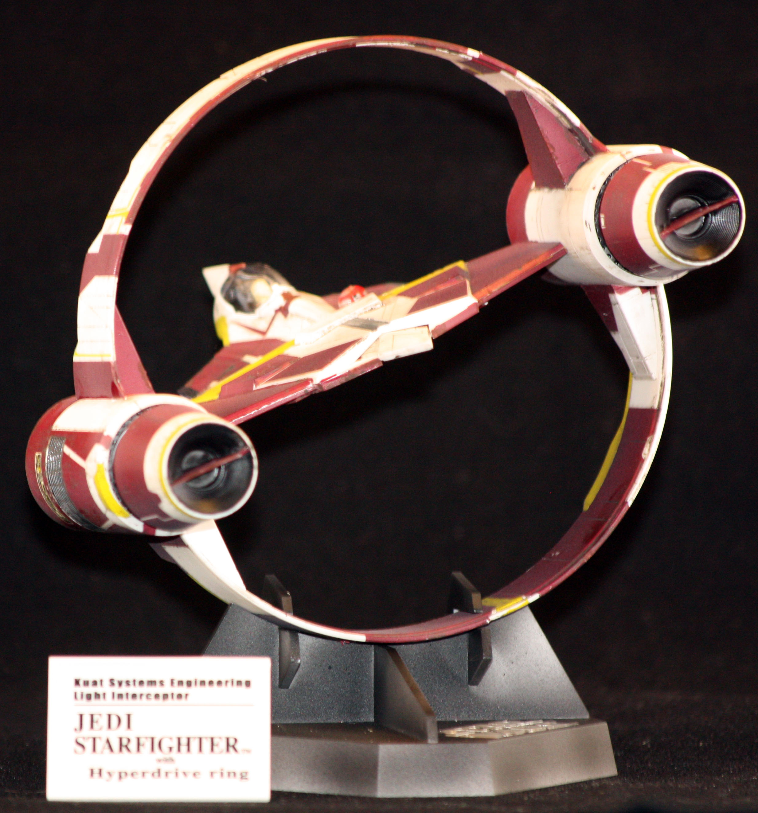

| Kit | Jedi Starfighter | ||
|---|---|---|---|
| Manufacturer | Fine Molds | Scale | 1/72 |
| Kit Number | Price | $25 | |
| Subject Modeled | Obi-Wan Kenobi's Jedi Starfighter, Star Wars: Episode II - Attack of the Clones | ||
| Start Date | |||
| Complete Date | |||
The Buffalo was not a very good airplane, but I had always wanted to build one. I think some time in the early part of the 2000s, I found it on the shelf at Hobby Lobby. I bought one but that was after I had mentioned it to my mother-in-law, who ended up getting one of these for me for Christmas. I still have one waiting to be built as a result. This kit was typical Tamiya quality. It went together without any issues, and I had a good time going outside of my normal comfort zone by doing a Buffalo in a more-or-less obscure military from World War II.
